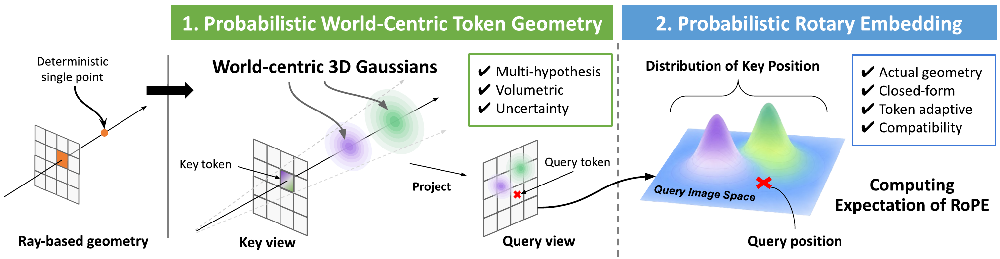
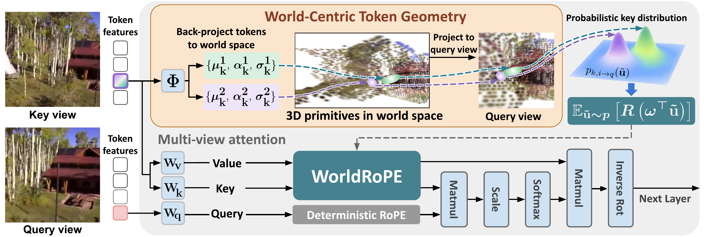

Selected figures and results from the main paper. The explorer visualizes predicted Gaussian support, with RGB supplied for inspection; it is not a synthesized target image or an additional benchmark.
Cross-view projection of Gaussian token support.
World-centric token geometry
A patch covers a viewing frustum, often crossing more than one depth. A mixture of volumetric Gaussians can retain those alternative surfaces, their uncertainty, and the finite footprint of the patch.

Figure 1. WorldRoPE overview. Multi-hypothesis token support is projected into the query view, where RoPE is integrated over possible key positions.
WorldRoPE in attention
At each Transformer layer, token features predict 3D Gaussian support for key patches. Projection into the query view gives a closed-form expected rotary operator for cross-view attention. The updated features inform geometry prediction in the next layer.

Figure 2. Geometry prediction and cross-view attention within a Transformer layer.
Novel view synthesis
With LVSM, WorldRoPE improves PSNR, SSIM, and LPIPS on RE10K.
Figure 3. Qualitative comparisons, including stair railings and house facades.
Table 2 in the paper. PSNR is in dB.